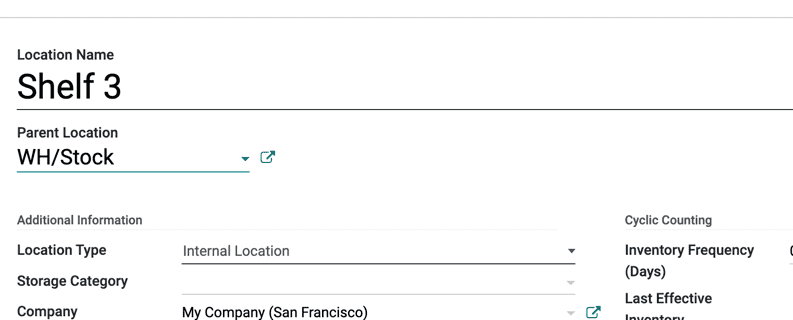

Manage Warehouses and Locations¶
Terminology¶
Warehouse¶
In Odoo, a Warehouse is the actual building/place in which a company’s items are stocked. Multiple warehouses can be set up in Odoo and the user can create moves between warehouses.
Location¶
A Location is a specific space within the warehouse. It can be a sublocation of the warehouse (a shelf, a floor, an aisle, and so on). Therefore, a location is part of one warehouse only and it is not possible to link one location to multiple warehouses. In Odoo, as many locations can be configured as needed under one warehouse.
There are three types of locations:
The Physical Locations are internal locations that are part of the warehouses that the company owns. They can be the loading and unloading areas of the warehouse, a shelf, a department, etc.
The Partner Locations are spaces within a customer and/or vendor’s warehouse. They work the same way as physical locations, with the only difference being that they are not owned by the user’s company.
The Virtual Locations are places that do not exist, but in which products can be placed when they are not physically in an inventory yet (or anymore). They come in handy when recording lost products (Inventory Loss), or accounting for products that are on their way to the warehouse (Procurements).
In Odoo, locations are structured hierarchically. Locations can be structured as a tree, dependent on a parent-child relationship. This gives more detailed levels of analysis of the stock operations and the organization of the warehouses.
Configuration¶
To activate locations, go to and enable Storage Locations. Then, click Save.

Important
To manage several routes within the warehouses, also enable Multi-Step Routes and check Routes and push/pull rules.
Create a new warehouse¶
To create a warehouse, go to and click on Create.
Then, fill out a Warehouse Name and a Short Name. The short name is five characters maximum.

Important
The Short Name appears on transfer orders and other warehouse documents. Odoo recommends using an understandable one like “WH/[first letters of location]”.
Now, go back to the Inventory dashboard. There, new operations related to the newly created warehouse have been automatically generated.

Note
Adding a second warehouse will automatically activate the Locations setting.
Create a new location¶
To create a location, go to and click on Create.
Then, fill out a Location Name and a Parent Location and click Save.
